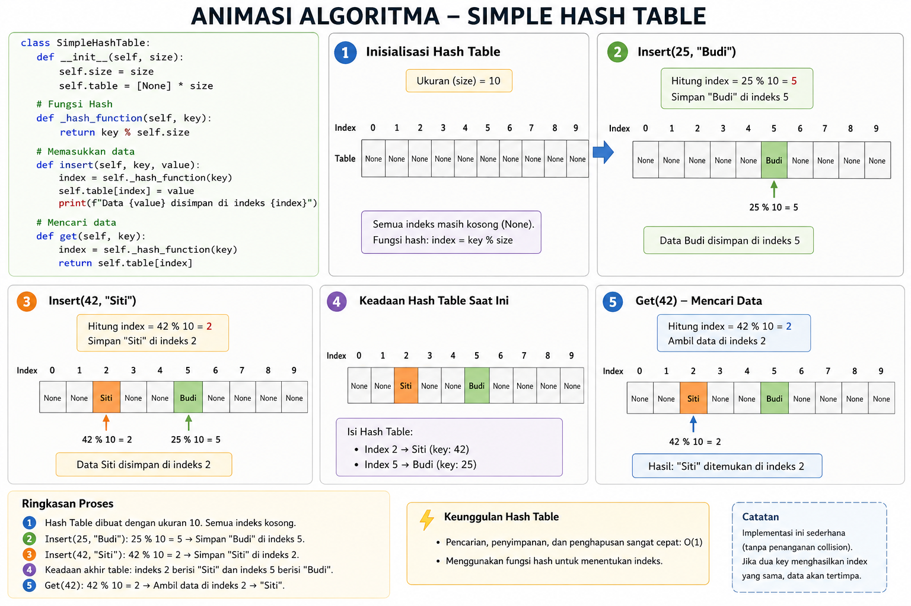

Hashing
Hashing itu ibarat sistem penitipan barang atau loker otomatis. Kalau di Linear atau Binary Search kita harus "mencari" dengan membandingkan angka, di Hashing kita langsung "tahu" di mana barangnya disimpan karena setiap data punya "alamat" uniknya sendiri. Dalam pemrograman, Hashing adalah proses mengubah data (seperti nama atau angka) menjadi nilai angka yang tetap, yang disebut Hash Value atau Hash Code, menggunakan fungsi matematika tertentu.
Komponen Hashing:
- Hash Function (Fungsi Hash): Rumus matematika untuk menentukan di mana data akan disimpan.
Hash Table: Array atau tempat penyimpanan data tersebut.
Collision (Tabrakan): Kondisi saat dua data berbeda mendapatkan alamat yang sama (ini masalah yang harus diselesaikan).
Ilustrasi

Contoh Sederhana Logika
Kita punya fungsi hash sederhana: H(x) = x % 10 (Sisa bagi dengan 10).
Data 25: 25 \pmod{10} = 5. (Simpan di slot nomor 5).
Data 42: 42 \pmod{10} = 2. (Simpan di slot nomor 2).
Data 17: 17 \pmod{10} = 7. (Simpan di slot nomor 7).
Saat mencari angka 42, komputer tidak perlu cek dari depan. Dia langsung hitung $42 \pmod{10} = 2$, lalu langsung buka laci nomor 2. Boom! Ketemu dalam satu langkah.
Implementasi Python
class SimpleHashTable:
def __init__(self, size):
self.size = size
self.table = [None] * size
# Fungsi Hash: Menentukan indeks berdasarkan sisa bagi
def _hash_function(self, key):
return key % self.size
# Memasukkan data
def insert(self, key, value):
index = self._hash_function(key)
self.table[index] = value
print(f"Data {value} disimpan di indeks {index}")
# Mencari data (Sangat cepat!)
def get(self, key):
index = self._hash_function(key)
return self.table[index]
# Uji coba
hash_tabel = SimpleHashTable(10)
hash_tabel.insert(25, "Budi")
hash_tabel.insert(42, "Siti")
print("Cari kunci 42:", hash_tabel.get(42))